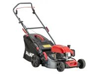
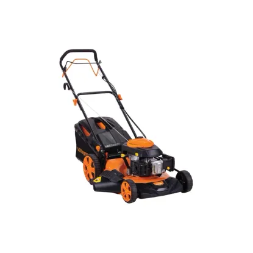
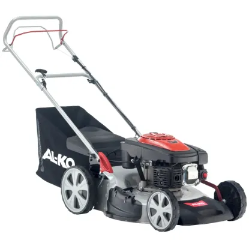
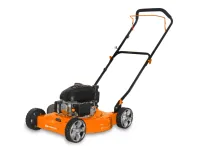
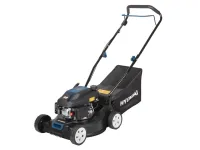
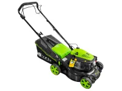

AL-KO TECH 5000 - 131 ccm motor, 41 cm, központi magasságállítás 7 fokozatban (25-75mm), 50l gyűjtő.

Négyütemű, léghűtéses motor, 173 cm3, 51 cm-es munkaszélesség, önjáró, központi kerékmagasság állítás, 50 literes fűgyűjtő, oldakidobás funkció.

A benzines fűnyíró 51 cm-es vágószélességével gondoskodik a könnyű és kényelmes fűnyírásról. A vágómagasság 7 fokozatban, központilag állítható be egyetlen kézmozdulattal 30 mm - 75 mm-ig a személyes igényeinek megfelelően.

A Daewoo DLM5100SD egy oldalkidobós fűnyíró. A 123 cm3-es motorjával hosszú élettartamot garantálva segíti a kert rendjének fenntartását. 3 fokozatban állítható a vágási magasság. A 51 cm-es vágási szélesség lehetővé teszi, hogy egyszerre nagyobb felületen dolgozzunk, ezzel lecsökkentve a teljes munkaidőt.

A Hyundai HYD-99CC-N egy 99 cm³-es, négyütemű OHV motorral szerelt benzinmotoros fűnyíró, amely 1,5 kW (2,4 LE) teljesítménnyel dolgozik, ideális választás kisebb és közepes méretű kertek karbantartására 600m². A 400 mm-es vágási szélesség hatékony munkavégzést tesz lehetővé, a kerekenként állítható vágási magasság pedig három fokozatban (25-65 mm) biztosítja a gyep igény szerinti megmunkálását.

Ez a benzines fűnyíró ideális választás minden kert fűnyírásához, akár lejtős terepen is, köszönhetően a kerékhajtásának. Erős, négyütemű motorral rendelkezik, és hatfokozatú vágási magasságállítással biztosítja az optimális eredményt. A 420 milliméteres vágási szélesség hatékony munkavégzést tesz lehetővé, miközben a tágas, 45 literes űrtartamú fűgyűjtő nagyobb területek egyszerű kezelését támogatja.